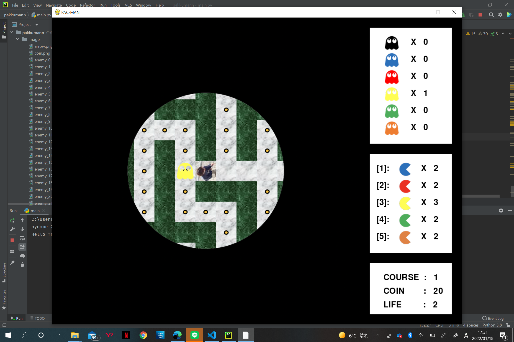

モジュールからパックマンのゲームを探し、自分なりに画像を変更しアレンジした

- import pygame
- import sys
- import random
- import math
- from collections import deque
- # ******************** 画像の読込 ********************
- img_road = pygame.image.load("image/road.png")
- img_wall = pygame.image.load("image/wall.png")
- img_scope = [
- pygame.image.load("image/scope_0.png"),
- pygame.image.load("image/scope_1.png")
- ]
- img_player = [
- pygame.image.load("image/S__14762009.jpg"),
- pygame.image.load("image/S__14762009.jpg"),
- pygame.image.load("image/player_2.png"),
- pygame.image.load("image/player_3.png"),
- pygame.image.load("image/player_4.png"),
- pygame.image.load("image/player_5.png"),
- pygame.image.load("image/player_6.png"),
- pygame.image.load("image/player_7.png"),
- pygame.image.load("image/player_8.png"),
- pygame.image.load("image/player_9.png"),
- pygame.image.load("image/player_10.png"),
- pygame.image.load("image/player_11.png")
- ]
- img_enemy = [
- pygame.image.load("image/enemy_0.png"),
- pygame.image.load("image/enemy_1.png"),
- pygame.image.load("image/enemy_2.png"),
- pygame.image.load("image/enemy_3.png"),
- pygame.image.load("image/enemy_4.png"),
- pygame.image.load("image/enemy_5.png"),
- pygame.image.load("image/enemy_6.png"),
- pygame.image.load("image/enemy_7.png"),
- pygame.image.load("image/enemy_8.png"),
- pygame.image.load("image/enemy_9.png"),
- pygame.image.load("image/enemy_10.png"),
- pygame.image.load("image/enemy_11.png"),
- pygame.image.load("image/enemy_12.png"),
- pygame.image.load("image/enemy_13.png"),
- pygame.image.load("image/enemy_14.png"),
- pygame.image.load("image/enemy_15.png"),
- pygame.image.load("image/enemy_16.png"),
- pygame.image.load("image/enemy_17.png"),
- pygame.image.load("image/enemy_18.png"),
- pygame.image.load("image/enemy_19.png"),
- pygame.image.load("image/enemy_20.png"),
- pygame.image.load("image/enemy_21.png"),
- pygame.image.load("image/enemy_22.png"),
- pygame.image.load("image/enemy_23.png")
- ]
- img_goal = pygame.image.load("image/goal.png")
- img_coin = pygame.image.load("image/coin.png")
- img_item = pygame.image.load("image/item.png")
- img_arrow = pygame.image.load("image/arrow.png")
- # ******************** 定数／変数 ********************
- # =============== COLOR ===============
- WHITE = (255, 255, 255)
- BLACK = (0, 0, 0)
- RED = (255, 0, 0)
- # =============== SOUND ===============
- snd_pacman_blue = None
- snd_pacman_red = None
- snd_pacman_yellow = None
- snd_pacman_green = None
- snd_pacman_brown = None
- snd_player_attack = None
- snd_player_damage = None
- snd_break_wall = None
- snd_arrive_goal = None
- snd_get_coin = None
- snd_get_item = None
- # =============== SIZE / FPS ===============
- SCREEN_SIZE = 900 # スクリーンサイズ
- FPS = 10 # フレームレート
- # =============== DIRECTION ===============
- DIR_UP = 0 # 上方向
- DIR_RIGHT = 1 # 右方向
- DIR_DOWN = 2 # 下方向
- DIR_LEFT = 3 # 左方向
- # =============== COLOR ===============
- COLOR_BLACK = 0 # 黒色
- COLOR_BLUE = 1 # 青色
- COLOR_RED = 2 # 赤色
- COLOR_YELLOW = 3 # 黄色
- COLOR_GREEN = 4 # 緑色
- COLOR_BROWN = 5 # 茶色
- # =============== GAME MANAGE ===============
- idx = 0 # ゲーム進行のインデックス
- tmr = 0 # ゲームのタイマー
- course = 0 # コースの回数
- WALL = 0 # 壁
- ROAD = -1 # 通路
- GOAL = -2 # ゴール
- ITEM = -3 # アイテム
- COIN = -4 # コイン
- # =============== PLAYER ===============
- pl_col = 0 # パックマンの色(使用するアイテムで変化)
- pl_x = 0 # x座標
- pl_y = 0 # y座標
- pl_d = 0 # 移動方向
- pl_fast = False # 移動スピードが早い
- pl_coin = 0 # 拾ったコインの数
- pl_life = 0 # 残機(100コインごとに1増える)
- pl_item = [0] * 6 # 各アイテムの所有数
- pl_scope = 0 # 視界の広さ
- pl_muteki = 0
- # =============== ENEMY ===============
- emy_max = 0 # 敵の最大数
- emy_no = 0 # 敵の配列の添字
- emy_num_max = False # 敵が最大数いるか
- emy_time = 0 # 敵を生成するまでの時間
- emy_f = [False] * emy_max # 敵が存在するか
- emy_col = [0] * emy_max # 敵の色(タイプ)
- emy_x = [0] * emy_max # x座標
- emy_y = [0] * emy_max # y座標
- emy_d = [0] * emy_max # 移動方向
- emy_s = [0] * emy_max # 移動スピード
- ENEMY_HIGH_SPEED = 2 # 移動スピード：早い
- ENEMY_NORMAL_SPEED = 4 # 移動スピード：普通
- ENEMY_LOW_SPEED = 6 # 移動スピード：遅い
- # =============== ITEM ===============
- item_use = False # 使用中の有無
- item_time = 0 # 使用時間
- item_max = 0 # アイテムの最大数
- item_generate_time = 0 # アイテムを生成するまでの時間
- # =============== MAZE ===============
- goal_f = False # ゴールが迷路上にあるか
- goal_generate_time = 0 # ゴールを生成するまでの時間
- # =============== MAZE ===============
- maze_size = 60 # 迷路の1ブロックのサイズ
- maze_num = 17 # 迷路のブロック数
- maze = [] # 迷路を管理
- # =============== BFS ===============
- q = deque()
- dist = []
- # ============================================================
- # DRAW
- # ============================================================
- # ******************** 文字の描画 ********************
- def draw_text(sc, txt, x, y, siz, col, center):
- fnt = pygame.font.Font(None, siz)
- sur = fnt.render(txt, True, col)
- # 中央揃え
- if center == True:
- x = x - sur.get_width() / 2
- y = y - sur.get_height() / 2
- # 文字の描画
- sc.blit(sur, [x, y])
- # ******************** 画像の描画 ********************
- def draw_img(sc, img, x, y):
- # 中央揃え
- x = x - img.get_width() / 2
- y = y - img.get_height() / 2
- # 画像の描画
- sc.blit(img, [x, y])
- # ******************** 迷路の描画 ********************
- def draw_maze(sc):
- for y in range(-7, 8):
- for x in range(-7, 8):
- X = (x + 7) * maze_size
- Y = (y + 7) * maze_size
- mx = pl_x + x
- my = pl_y + y
- # 描画：壁と通路
- if 0 <= mx < maze_num and 0 <= my < maze_num:
- if maze[my][mx] == WALL: # 壁
- sc.blit(img_wall, [X, Y])
- if maze[my][mx] == ROAD: # 通路
- sc.blit(img_road, [X, Y])
- # 描画：ゴール
- if maze[my][mx] == GOAL:
- sc.blit(img_goal, [X, Y])
- # 描画：コイン
- if maze[my][mx] == COIN:
- sc.blit(img_coin, [X, Y])
- # 描画：アイテム
- if maze[my][mx] == ITEM:
- sc.blit(img_item, [X, Y])
- # 描画：敵
- for n in range(emy_max):
- if emy_f[n] == False:
- continue
- if emy_x[n] == mx and emy_y[n] == my:
- sc.blit(img_enemy[emy_col[n] * 4 + emy_d[n]], [X, Y])
- # 描画：プレイヤー
- if x == 0 and y == 0:
- if pl_muteki % 2 == 0:
- img_rz = pygame.transform.rotozoom(img_player[pl_col * 2 + tmr % 2], pl_d * (-90), 1.0)
- # アイテム使用中 + 使用時間切れ間近
- if item_use == True and item_time < FPS * 3:
- if tmr % 2 == 0:
- sc.blit(img_rz, [X, Y])
- else:
- sc.blit(img_rz, [X, Y])
- # 緑色のパックマンの効果：矢印
- if pl_col == COLOR_GREEN and goal_f == True:
- # プレイヤーからゴールの方向(角度)を取得
- a = calc_angle_of_goal_from_player()
- # ゴールの方向に矢印を向ける
- img_rz = pygame.transform.rotozoom(img_arrow, -a, 1.0)
- draw_img(sc, img_rz, X + maze_size / 2, Y - maze_size)
- # 描画：視界エリア
- draw_img(sc, img_scope[pl_scope], SCREEN_SIZE / 2, SCREEN_SIZE / 2)
- # 枠組み
- pygame.draw.rect(sc, WHITE, [SCREEN_SIZE + 30, 30, 240, 340])
- pygame.draw.rect(sc, WHITE, [SCREEN_SIZE + 30, 400, 240, 290])
- pygame.draw.rect(sc, WHITE, [SCREEN_SIZE + 30, 720, 240, 150])
- # 色別の敵の数
- count_enemy_color = [0] * 6
- for n in range(emy_max):
- if emy_f[n] == False:
- continue
- # 色別にカウント
- count_enemy_color[emy_col[n]] += 1
- # 敵の情報
- for i in range(6):
- # 画像の描画
- img_rz = pygame.transform.rotozoom(img_enemy[i * 4], 0, 0.8)
- sc.blit(img_rz, [SCREEN_SIZE + 70, 50 + 50 * i])
- # 文字の描画
- draw_text(sc, "X " + str(count_enemy_color[i]), SCREEN_SIZE + 150, 60 + 50 * i, 35, BLACK, False)
- # パックマン(効果)の情報
- for i in range(1, 6):
- # 画像の描画
- img_rz = pygame.transform.rotozoom(img_player[i * 2], -90, 0.8)
- sc.blit(img_rz, [SCREEN_SIZE + 110, 370 + 50 * i])
- # 文字の描画
- draw_text(sc, "[" + str(i) + "]:", SCREEN_SIZE + 50, 380 + 50 * i, 35, BLACK, False)
- draw_text(sc, "X " + str(pl_item[i]), SCREEN_SIZE + 180, 380 + 50 * i, 35, BLACK, False)
- # プレイヤーの情報
- draw_text(sc, "COURSE : " + str(course), SCREEN_SIZE + 70, 750, 35, BLACK, False)
- draw_text(sc, "COIN : " + str(pl_coin), SCREEN_SIZE + 70, 790, 35, BLACK, False)
- draw_text(sc, "LIFE : " + str(pl_life), SCREEN_SIZE + 70, 830, 35, BLACK, False)
- # ============================================================
- # MAZE
- # ============================================================
- # ******************** 迷路の初期化 ********************
- def init_maze():
- global maze, maze_num
- # 迷路の大きさを拡大
- maze_num += 2
- # 迷路の初期化
- maze = []
- for y in range(maze_num):
- maze.append([0] * maze_num)
- # ******************** 迷路の自動生成 ********************
- def make_maze():
- # 迷路の初期化
- init_maze()
- # 方向：上、右、下、左
- XP = [0, 1, 0, -1]
- YP = [-1, 0, 1, 0]
- # ボードの周囲を壁にする
- for x in range(maze_num):
- maze[0][x] = WALL
- maze[maze_num - 1][x] = WALL
- for y in range(maze_num - 1):
- maze[y][0] = WALL
- maze[y][maze_num - 1] = WALL
- # ボードの中を全て通路にする
- for y in range(1, maze_num - 1):
- for x in range(1, maze_num - 1):
- maze[y][x] = ROAD
- # 【棒倒し方で迷路を作成】
- # 等間隔に壁を作る
- for y in range(2, maze_num - 2, 2):
- for x in range(2, maze_num - 2, 2):
- maze[y][x] = WALL
- # 等間隔に作った壁の隣に、壁を作る
- for y in range(2, maze_num - 2, 2):
- for x in range(2, maze_num - 2, 2):
- d = random.randint(0, 3)
- if x > 2:
- d = random.randint(0, 2)
- maze[y + YP[d]][x + XP[d]] = WALL
- # ============================================================
- # PLAYER
- # ============================================================
- # ******************** プレイヤーの移動 ********************
- def move_player(key):
- global pl_x, pl_y, pl_d
- # プレイヤーの移動速度
- if pl_fast == False:
- if tmr % 2 == 0:
- return
- # キー入力：上方向
- if key[pygame.K_UP] == True:
- pl_d = DIR_UP
- # 移動方向が壁以外
- if maze[pl_y - 1][pl_x] != WALL:
- pl_y -= 1
- # 壁 + 茶色のパックマン
- else:
- if pl_col == COLOR_BROWN:
- snd_break_wall.play()
- maze[pl_y - 1][pl_x] = ROAD
- pl_y -= 1
- item_effect_off()
- # キー入力：右方向
- if key[pygame.K_RIGHT] == True:
- pl_d = DIR_RIGHT
- # 移動方向が壁以外
- if maze[pl_y][pl_x + 1] != WALL:
- pl_x += 1
- # 壁 + 茶色のパックマン
- else:
- if pl_col == COLOR_BROWN:
- snd_break_wall.play()
- maze[pl_y][pl_x + 1] = ROAD
- pl_x += 1
- item_effect_off()
- # キー入力：下方向
- if key[pygame.K_DOWN] == True:
- pl_d = DIR_DOWN
- # 移動方向が壁以外
- if maze[pl_y + 1][pl_x] != WALL:
- pl_y += 1
- # 壁 + 茶色のパックマン
- else:
- if pl_col == COLOR_BROWN:
- snd_break_wall.play()
- maze[pl_y + 1][pl_x] = ROAD
- pl_y += 1
- item_effect_off()
- # キー入力：左方向
- if key[pygame.K_LEFT] == True:
- pl_d = DIR_LEFT
- # 移動方向が壁以外
- if maze[pl_y][pl_x - 1] != WALL:
- pl_x -= 1
- # 壁 + 茶色のパックマン
- else:
- if pl_col == COLOR_BROWN:
- snd_break_wall.play()
- maze[pl_y][pl_x - 1] = ROAD
- pl_x -= 1
- item_effect_off()
- # ============================================================
- # ENEMY
- # ============================================================
- # ******************** 敵の初期化 ********************
- def init_enemy():
- global emy_f, emy_col, emy_x, emy_y, emy_d, emy_s
- emy_f = [False] * emy_max
- emy_col = [0] * emy_max
- emy_x = [0] * emy_max
- emy_y = [0] * emy_max
- emy_d = [0] * emy_max
- emy_s = [0] * emy_max
- # ******************** 敵を出す ********************
- def bring_enemy():
- # 敵の配置：ランダム選択
- while True:
- emy_x = random.randint(1, maze_num - 2)
- emy_y = random.randint(1, maze_num - 2)
- # 位置が通路(コインを含む)場合 -> ok
- if maze[emy_y][emy_x] == ROAD or maze[emy_y][emy_x] == COIN:
- # プレイヤーと離れている -> ok
- if (emy_x < pl_x - 5 or pl_x + 5 < emy_x) and (emy_y < pl_y - 5 or pl_y + 5 < emy_y):
- break
- # 敵の色：ランダム選択
- emy_col = random.randint(COLOR_BLACK, COLOR_BROWN)
- # 敵の移動スピード(敵の色で判別)
- if emy_col == COLOR_BLACK: # 黒
- emy_s = ENEMY_HIGH_SPEED
- elif emy_col == COLOR_RED: # 赤
- emy_s = ENEMY_NORMAL_SPEED
- else: # 青、黄、緑、茶
- emy_s = ENEMY_LOW_SPEED
- # 敵を配置
- set_enemy(emy_x, emy_y, emy_s, emy_col)
- # ******************** 敵をセット ********************
- def set_enemy(x, y, s, col):
- global emy_no
- while True:
- if emy_f[emy_no] == False:
- emy_f[emy_no] = True
- emy_col[emy_no] = col
- emy_x[emy_no] = x
- emy_y[emy_no] = y
- emy_s[emy_no] = s
- break
- emy_no = (emy_no + 1) % emy_max
- # ******************** 敵の移動 ********************
- def move_enemy():
- for n in range(emy_max):
- # 敵が存在しない(要素の)場合はとばす
- if emy_f[n] == False:
- continue
- # 敵の移動スピード
- if tmr % emy_s[n] != 0:
- continue
- # 敵の色：黒 -> 移動方向：プレイヤーのいる方向 or ランダム
- if emy_col[n] == COLOR_BLACK:
- # 移動方向：プレイヤーの方向
- if emy_y[n] > pl_y:
- emy_dir = DIR_UP # 上方向
- if emy_y[n] < pl_y:
- emy_dir = DIR_DOWN # 下方向
- if emy_x[n] < pl_x:
- emy_dir = DIR_RIGHT # 右方向
- if emy_x[n] > pl_x:
- emy_dir = DIR_LEFT # 左方向
- # 移動できたかどうか -> 移動可能ならば移動(Trueを返す)
- move_ok = move_check_to_move(emy_dir, n)
- # 移動できていない場合 -> ランダム
- if move_ok == False:
- while True:
- emy_dir = random.randint(DIR_UP, DIR_LEFT) # 移動方向：ランダム選択
- move_ok = move_check_to_move(emy_dir, n) # 移動できたかどうか -> 移動可能ならば移動(Trueを返す)
- # 移動できるまで繰り返す
- if move_ok == True:
- break
- # 敵の色：青、赤、黄、緑、茶 -> 移動方向：目標へ移動(追尾)
- else:
- # 青、赤 -> プレイヤーを追尾
- if emy_col[n] == COLOR_BLUE or emy_col[n] == COLOR_RED:
- BFS(emy_x[n], emy_y[n], pl_x, pl_y) # 幅優先探索法でプレイヤーの位置までの最短ルートを算出
- next_dir = next_direction(emy_x[n], emy_y[n], pl_x, pl_y) # 幅優先探索法で求めたルートから次の移動方向を取得
- # 黄 -> ゴールへ移動 or プレイヤーを追尾
- elif emy_col[n] == COLOR_YELLOW:
- # ゴールが存在する：ゴールへ移動
- if search_target(GOAL) == True:
- goal_x, goal_y = get_target_coordinate(GOAL) # ゴールのx,y座標を取得
- BFS(emy_x[n], emy_y[n], goal_x, goal_y) # 幅優先探索法でゴールの位置までの最短ルートを算出
- next_dir = next_direction(emy_x[n], emy_y[n], goal_x, goal_y) # 幅優先探索法で求めたルートから次の移動方向を取得
- # ゴールが存在しない：プレイヤーを追尾
- else:
- BFS(emy_x[n], emy_y[n], pl_x, pl_y) # 幅優先探索法でプレイヤーの位置までの最短ルートを算出
- next_dir = next_direction(emy_x[n], emy_y[n], pl_x, pl_y) # 幅優先探索法で求めたルートから次の移動方向を取得
- # 緑：コイン
- elif emy_col[n] == COLOR_GREEN:
- # コインが存在する：コインへ移動
- if search_target(COIN) == True:
- coin_x, coin_y = get_target_coordinate(COIN) # コインのx,y座標を取得
- BFS(emy_x[n], emy_y[n], coin_x, coin_y) # 幅優先探索法でコインの位置までの最短ルートを算出
- next_dir = next_direction(emy_x[n], emy_y[n], coin_x, coin_y) # 幅優先探索法で求めたルートから次の移動方向を取得
- # コインが存在しない：プレイヤーを追尾
- else:
- BFS(emy_x[n], emy_y[n], pl_x, pl_y) # 幅優先探索法でプレイヤーの位置までの最短ルートを算出
- next_dir = next_direction(emy_x[n], emy_y[n], pl_x, pl_y) # 幅優先探索法で求めたルートから次の移動方向を取得
- # 茶：アイテム
- elif emy_col[n] == COLOR_BROWN:
- # アイテムが存在する：アイテムへ移動
- if search_target(ITEM) == True:
- item_x, item_y = get_target_coordinate(ITEM) # アイテムのx,y座標を取得
- BFS(emy_x[n], emy_y[n], item_x, item_y) # 幅優先探索法でコインの位置までの最短ルートを算出
- next_dir = next_direction(emy_x[n], emy_y[n], item_x, item_y) # 幅優先探索法で求めたルートから次の移動方向を取得
- # アイテムが存在しない：プレイヤーを追尾
- else:
- BFS(emy_x[n], emy_y[n], pl_x, pl_y) # 幅優先探索法でプレイヤーの位置までの最短ルートを算出
- next_dir = next_direction(emy_x[n], emy_y[n], pl_x, pl_y) # 幅優先探索法で求めたルートから次の移動方向を取得
- # 移動
- if next_dir == DIR_UP: # 上方向
- emy_y[n] -= 1
- emy_d[n] = DIR_UP
- elif next_dir == DIR_RIGHT: # 右方向
- emy_x[n] += 1
- emy_d[n] = DIR_RIGHT
- elif next_dir == DIR_DOWN: # 下方向
- emy_y[n] += 1
- emy_d[n] = DIR_DOWN
- elif next_dir == DIR_LEFT: # 左方向
- emy_x[n] -= 1
- emy_d[n] = DIR_LEFT
- # ******************** 取得した移動方向に移動可能か確認 -> 可能ならば移動(True) ********************
- def move_check_to_move(emy_dir, no):
- # 移動可能か確認 -> 移動
- move_ok = False
- # 上方向に移動 + 移動可否の確認
- if emy_dir == DIR_UP and maze[emy_y[no] - 1][emy_x[no]] != 0:
- emy_d[no] = DIR_UP
- emy_y[no] -= 1
- move_ok = True
- # 右方向に移動 + 移動可否の確認
- if emy_dir == DIR_RIGHT and maze[emy_y[no]][emy_x[no] + 1] != 0:
- emy_d[no] = DIR_RIGHT
- emy_x[no] += 1
- move_ok = True
- # 下方向に移動 + 移動可否の確認
- if emy_dir == DIR_DOWN and maze[emy_y[no] + 1][emy_x[no]] != 0:
- emy_d[no] = DIR_DOWN
- emy_y[no] += 1
- move_ok = True
- # 左方向に移動 + 移動可否の確認
- if emy_dir == DIR_LEFT and maze[emy_y[no]][emy_x[no] - 1] != 0:
- emy_d[no] = DIR_LEFT
- emy_x[no] -= 1
- move_ok = True
- return move_ok
- # ******************** ゲーム上に敵が最大数いるか調べる ********************
- def enemy_num_max_check():
- global emy_num_max, emy_time
- # 敵の最大数分を繰り返す
- for n in range(emy_max):
- # 敵が最大数分いない場合
- if emy_f[n] == False:
- emy_num_max = False
- emy_time = FPS * 20
- break
- # ******************** 敵を生成するか判定 -> 生成を行う ********************
- def check_enemy_to_generate():
- global emy_time, emy_num_max
- # 敵の最大数いる -> 最大数いるか判定
- if emy_num_max == True:
- enemy_num_max_check()
- # 敵が最大数いない + 敵の再生成時間が0より大きい
- elif emy_num_max == False and emy_time > 0:
- emy_time -= 1
- # 敵が最大数いない + 敵の際生成時間が0 -> 敵を生成
- elif emy_num_max == False and emy_time == 0:
- bring_enemy()
- emy_num_max = True
- # ============================================================
- # ITEM
- # ============================================================
- # ******************** アイテムの使用 ********************
- def use_item(key):
- global pl_col, pl_scope, pl_fast
- global item_use, item_time
- # 青色のパックマン
- if key[pygame.K_1] == True and pl_item[COLOR_BLUE] > 0:
- snd_pacman_blue.play()
- item_effect_off()
- pl_item[COLOR_BLUE] -= 1
- pl_col = COLOR_BLUE
- pl_fast = True
- item_use = True
- item_time = FPS * 18
- # 赤色のパックマン
- if key[pygame.K_2] == True and pl_item[COLOR_RED] > 0:
- snd_pacman_red.play()
- item_effect_off()
- pl_item[COLOR_RED] -= 1
- pl_col = COLOR_RED
- item_use = True
- item_time = FPS * 8
- # 黄色のパックマン
- if key[pygame.K_3] == True and pl_item[COLOR_YELLOW] > 0:
- snd_pacman_yellow.play()
- item_effect_off()
- pl_item[COLOR_YELLOW] -= 1
- pl_col = COLOR_YELLOW
- pl_scope = 1
- item_use = True
- item_time = FPS * 13
- # 緑色のパックマン
- if key[pygame.K_4] == True and pl_item[COLOR_GREEN] > 0:
- snd_pacman_green.play()
- item_effect_off()
- pl_item[COLOR_GREEN] -= 1
- pl_col = COLOR_GREEN
- item_use = True
- item_time = FPS * 23
- # 茶色のパックマン
- if key[pygame.K_5] == True and pl_item[COLOR_BROWN] > 0:
- snd_pacman_brown.play()
- item_effect_off()
- pl_item[COLOR_BROWN] -= 1
- pl_col = COLOR_BROWN
- item_use = True
- item_time = FPS * 33
- # ******************** アイテムの効果を解除 ********************
- def item_effect_off():
- global pl_col, pl_scope, pl_fast
- global item_use, item_time
- # アイテムの使用中：False ／ 使用時間：0
- item_use = False
- item_time = 0
- # パックマンの色：黒 ／ 移動速度：通常 ／ 視野の範囲：通常
- pl_col = COLOR_BLACK
- pl_fast = False
- pl_scope = 0
- # ******************** アイテムを生成するか判定 -> 生成を行う ********************
- def check_item_to_generate():
- global item_generate_time
- # 迷路上のアイテムの数をカウント
- count_item = 0
- for y in range(maze_num):
- for x in range(maze_num):
- if maze[y][x] == ITEM:
- count_item += 1
- # アイテムが最大数までない + アイテムの再生成時間がある
- if count_item < item_max and item_generate_time:
- item_generate_time -= 1
- # アイテムが最大数までない + アイテムの再生成時間が0 -> アイテムの生成
- elif count_item < item_max and item_generate_time == 0:
- set_target(ITEM)
- item_generate_time = FPS * 15
- # ============================================================
- # GOAL
- # ============================================================
- # ******************** ゴールを生成するか判定 -> 生成を行う ********************
- def check_goal_to_generate():
- global goal_generate_time, goal_f
- # ゴールがない + ゴールの再生成時間がある
- if goal_f == False and goal_generate_time > 0:
- goal_generate_time -= 1
- # ゴールがない + ゴールの再生成時間が0 -> ゴールの生成
- elif goal_f == False and goal_generate_time == 0:
- set_target(GOAL)
- goal_f = True
- # ============================================================
- # BFS
- # ============================================================
- # ******************** distの初期化 ********************
- def init_dist():
- global dist
- # distの初期化
- dist = []
- for y in range(maze_num):
- dist.append([0] * maze_num)
- # ******************** 幅優先探索法より、目的地のルートをマッピングするために使用(mazeのコピー) ********************
- def set_dist():
- # distの初期化
- init_dist()
- # 迷路をコピー(WALL or ROADのみ)
- for y in range(maze_num):
- for x in range(maze_num):
- if maze[y][x] == WALL:
- dist[y][x] = WALL
- else:
- dist[y][x] = ROAD
- # ******************** 幅優先探索法 ********************
- def BFS(start_x, start_y, end_x, end_y):
- global q
- # 迷路のコピーを作成
- set_dist()
- # ナンバリング用の数字
- dist_num = 1
- # x,y方向
- dy = (1, 0, -1, 0)
- dx = (0, 1, 0, -1)
- # キュー：初期値の追加
- q = deque()
- q.append((start_x, start_y))
- # スタート位置をナンバリング
- dist[start_y][start_x] = dist_num
- # 目標の位置まで探索したら、True
- target_search = False
- while len(q) > 0:
- # 現在地(x,y)を取得
- now_pos = q.popleft()
- x, y = now_pos
- # ナンバリング
- dist_num += 1
- # 上下左右の4方向
- for di in range(4):
- nx = x + dx[di]
- ny = y + dy[di]
- # 迷路の範囲外はとばす
- if (nx < 0 or nx >= maze_num or ny < 0 or ny >= maze_num): continue
- # 壁とナンバリング済みのマスはとばす
- if (dist[ny][nx] >= WALL): continue
- # 探索終了：目標の位置にたどり着いた場合
- if nx == end_x and ny == end_y:
- # ナンバリング
- dist[ny][nx] = dist_num
- target_search = True
- break
- # ナンバリング
- dist[ny][nx] = dist_num
- # 次の探索
- q.append((nx, ny))
- # while文を抜ける：プレイヤーの探索をした場合
- if target_search == True:
- break
- # ******************** 幅優先探索法(BFS)から次の移動方向を取得 ********************
- def next_direction(start_x, start_y, end_x, end_y):
- dist_x = end_x
- dist_y = end_y
- dist_num = dist[end_y][end_x]
- # 次の移動方向
- next_dir = 0
- while True:
- # 次の移動方向
- dist_num -= 1
- # 上方向
- if dist[dist_y - 1][dist_x] == dist_num:
- dist_y -= 1
- next_dir = DIR_DOWN
- # 右方向
- elif dist[dist_y][dist_x + 1] == dist_num:
- dist_x += 1
- next_dir = DIR_LEFT
- # 下方向
- elif dist[dist_y + 1][dist_x] == dist_num:
- dist_y += 1
- next_dir = DIR_UP
- # 左方向
- elif dist[dist_y][dist_x - 1] == dist_num:
- dist_x -= 1
- next_dir = DIR_RIGHT
- # 敵の位置まで来たらループを抜ける
- if dist_x == start_x and dist_y == start_y:
- break
- return next_dir
- # ============================================================
- # SEARCH / GET / SET
- # ============================================================
- # ******************** 指定のターゲットが存在するか探す ********************
- def search_target(target):
- # 指定のターゲットが存在するか
- result = False
- # 指定のターゲットを探す
- for y in range(maze_num):
- for x in range(maze_num):
- if maze[y][x] == target:
- result = True
- return result
- # ******************** 指定のターゲットのx,y座標の取得 ********************
- def get_target_coordinate(target):
- # 指定のターゲットのx,y座標
- target_x = 0
- target_y = 0
- # 指定のターゲットの座標を探す
- for y in range(maze_num):
- for x in range(maze_num):
- if maze[y][x] == target:
- target_x = x
- target_y = y
- return target_x, target_y
- # ******************** 目標をセット ********************
- def set_target(target):
- # 取得するx,y座標
- x = 0
- y = 0
- # プレイヤーから離す距離
- dis = maze_num // 4
- while True:
- # x,y座標 -> ランダム選択
- x = random.randint(1, maze_num - 2)
- y = random.randint(1, maze_num - 2)
- # x,y座標 -> 通路 or コイン
- if maze[y][x] == ROAD or maze[y][x] == COIN:
- maze[y][x] = target
- break
- # ============================================================
- # CALC
- # ============================================================
- # ******************** プレイヤーとゴールの位置の角度を算出(緑色のパックマンの効果で使用) ********************
- def calc_angle_of_goal_from_player():
- # 計算：プレイヤーのx,y座標
- x_pl = pl_x * maze_size + maze_size / 2
- y_pl = pl_y * maze_size + maze_size / 2
- # 計算：ゴールのx,y座標
- x_goal = 0
- y_goal = 0
- for y in range(maze_num):
- for x in range(maze_num):
- if maze[y][x] == GOAL:
- x_goal = x * maze_size + maze_size / 2
- y_goal = y * maze_size + maze_size / 2
- # 計算：プレイヤーとゴールのx,y方向の距離
- x_dis = x_goal - x_pl
- y_dis = y_goal - y_pl
- # 角度を計算
- ang = math.degrees(math.atan2(y_dis, x_dis))
- return ang
- # ============================================================
- # HIT CHECK
- # ============================================================
- # ******************** ヒットチェック ********************
- def hit_check():
- global pl_life, pl_coin, pl_muteki
- global goal_f, goal_generate_time
- # プレイヤー：コインを拾う
- if maze[pl_y][pl_x] == COIN:
- snd_get_coin.play()
- maze[pl_y][pl_x] = ROAD
- pl_coin += 1
- # コインが100枚 -> ライフが1増える
- if pl_coin >= 100:
- pl_life += 1
- pl_coin -= 100
- # プレイヤー：アイテムを拾う
- if maze[pl_y][pl_x] == ITEM:
- snd_get_item.play()
- maze[pl_y][pl_x] = ROAD
- # 取得するアイテムの種類をランダムに選定
- item = random.randint(1, 5)
- pl_item[item] += 1
- # 敵
- for n in range(emy_max):
- # 敵が存在しない場合はとばす
- if emy_f[n] == False:
- continue
- # 敵：プレイヤーと衝突
- if emy_x[n] == pl_x and emy_y[n] == pl_y:
- # プレイヤー：赤色のパックマンの時 -> 敵を倒す
- if pl_col == COLOR_RED:
- snd_player_attack.play()
- emy_f[n] = False
- # プレイヤー：赤色のパックマン以外
- else:
- # プレイヤーが無敵状態ではない場合
- if pl_muteki == 0:
- snd_player_damage.play()
- pl_muteki = FPS * 3
- pl_life -= 1
- emy_f[n] = False
- # 敵：黄 -> ゴールへ到達
- if emy_col[n] == COLOR_YELLOW and maze[emy_y[n]][emy_x[n]] == GOAL:
- maze[emy_y[n]][emy_x[n]] = ROAD # ゴールをなくす
- goal_f = False # ゴールがないフラグ
- goal_generate_time = FPS * 15 # ゴールを再生成するまでの時間
- # 敵：緑 -> コインへ到達
- if emy_col[n] == COLOR_GREEN and maze[emy_y[n]][emy_x[n]] == COIN:
- maze[emy_y[n]][emy_x[n]] = ROAD # コインをなくす
- # 敵：茶 -> アイテムへ到達
- if emy_col[n] == COLOR_BROWN and maze[emy_y[n]][emy_x[n]] == ITEM:
- maze[emy_y[n]][emy_x[n]] = ROAD # アイテムをなくす
- # ============================================================
- # GAME
- # ============================================================
- # ******************** ゲームの初期化 ********************
- def init_game():
- global maze_num, course
- global pl_life, pl_item, pl_coin, pl_muteki
- # 迷路の数
- maze_num = 17
- # コースの階層
- course = 0
- # プレイヤー情報
- pl_life = 2
- pl_item = [2] * 6
- pl_coin = 0
- pl_muteki = 0
- # アイテムの効果を無効
- item_effect_off()
- # ******************** ゲームの初期配置／設定 ********************
- def init_game_place():
- global pl_x, pl_y
- global emy_d, emy_x, emy_y, emy_max, emy_num_max, emy_time
- global item_n, item_max, item_generate_time
- global goal_f
- # 敵
- emy_max = maze_num // 5 # 敵の最大数
- emy_num_max = False # 敵が最大数いるか(初期時はいない)
- emy_time = FPS * 20 # 敵を再生成するまでの時間
- init_enemy() # 敵の初期化
- # アイテム
- item_max = maze_num // 5 # アイテムの最大数
- item_generate_time = FPS * 60 # アイテムを再生成するまでの時間
- # プレイヤーの配置
- while True:
- pl_x = random.randint(1, maze_num - 2)
- pl_y = random.randint(1, maze_num - 2)
- if maze[pl_y][pl_x] == ROAD:
- break
- # 敵の配置
- for i in range(maze_num // 10):
- bring_enemy()
- # ゴールの配置
- set_target(GOAL)
- goal_f = True
- # アイテムの配置
- for n in range(maze_num // 10):
- set_target(ITEM)
- # コインの配置
- for y in range(maze_num):
- for x in range(maze_num):
- if maze[y][x] == ROAD:
- maze[y][x] = COIN
- # ============================================================
- # MAIN
- # ============================================================
- # ******************** メインループ ********************
- def main():
- global idx, tmr, course
- global snd_pacman_blue, snd_pacman_red, snd_pacman_yellow, snd_pacman_green, snd_pacman_brown
- global snd_player_attack, snd_player_damage, snd_break_wall
- global snd_arrive_goal, snd_get_coin, snd_get_item
- global pl_col, pl_muteki
- global item_use, item_time
- # pygameモジュールの初期化 ／ タイトル設定
- pygame.init()
- pygame.display.set_caption("PAC-MAN")
- # スクリーンの初期化 ／ クロックオブジェクト作成
- screen = pygame.display.set_mode((SCREEN_SIZE + 300, SCREEN_SIZE))
- clock = pygame.time.Clock()
- # 効果音
- snd_pacman_blue = pygame.mixer.Sound("sound/pacman_blue.mp3")
- snd_pacman_red = pygame.mixer.Sound("sound/pacman_red.mp3")
- snd_pacman_yellow = pygame.mixer.Sound("sound/pacman_yellow.mp3")
- snd_pacman_green = pygame.mixer.Sound("sound/pacman_green.mp3")
- snd_pacman_brown = pygame.mixer.Sound("sound/pacman_brown.mp3")
- snd_player_attack = pygame.mixer.Sound("sound/player_attack.mp3")
- snd_player_damage = pygame.mixer.Sound("sound/player_damage.mp3")
- snd_break_wall = pygame.mixer.Sound("sound/break_wall.mp3")
- snd_arrive_goal = pygame.mixer.Sound("sound/arrive_goal.mp3")
- snd_get_coin = pygame.mixer.Sound("sound/get_coin.mp3")
- snd_get_item = pygame.mixer.Sound("sound/get_item.mp3")
- while True:
- tmr = tmr + 1
- # プログラムの終了
- for event in pygame.event.get():
- if event.type == pygame.QUIT:
- pygame.quit()
- sys.exit()
- # スクリーン ／ キー入力
- screen.fill(BLACK)
- key = pygame.key.get_pressed()
- # タイトル
- if idx == 0:
- # 音楽をかける
- if tmr == 1:
- pygame.mixer.music.load("music/Stellar_Wind-Unicorn_Heads.mp3")
- pygame.mixer.music.play(-1)
- screen.fill(WHITE)
- if key[pygame.K_SPACE] == 1:
- # 音楽をかける
- pygame.mixer.music.load("music/Zoom_Vibe_Tracks.mp3")
- pygame.mixer.music.play(-1)
- # ゲームの初期化
- init_game()
- idx = 1
- tmr = 0
- draw_text(screen, "PUSH [ SPACE ] TO START", (SCREEN_SIZE + 300) / 2, SCREEN_SIZE / 2, 80, BLACK, True)
- # ゲームプレイ
- elif idx == 1:
- # 迷路の生成／ゲームの初期配置
- if tmr == 1:
- course += 1
- make_maze()
- init_game_place()
- # プレイ中
- else:
- move_player(key) # プレイヤーの動き
- move_enemy() # 敵の動き
- use_item(key) # アイテムの使用
- hit_check() # ヒットチェック
- check_enemy_to_generate() # 敵を生成するか判定 -> 生成を行う
- check_goal_to_generate() # ゴールを生成するか判定 -> 生成を行う
- check_item_to_generate() # アイテムを生成するか判定 -> 生成を行う
- # アイテムを使用中の場合
- if item_use == True:
- item_time -= 1
- # アイテムの使用時間が切れた場合
- if item_time == 0:
- item_effect_off()
- # プレイヤーが無敵状態の場合
- if pl_muteki > 0:
- pl_muteki -= 1
- # プレイヤーのライフがなくなるとゲームオーバー
- if pl_life <= 0:
- idx = 2
- tmr = 0
- # ゴールすると次のコースへ
- if maze[pl_y][pl_x] == GOAL:
- snd_arrive_goal.play()
- tmr = 0
- # ゲームオーバー
- elif idx == 2:
- draw_text(screen, "GAME OVER", (SCREEN_SIZE + 300) / 2, SCREEN_SIZE / 2, 100, RED, True)
- if tmr == FPS * 3:
- idx = 0
- tmr = 0
- # 描画：迷路
- if idx == 1 and tmr > 0:
- draw_maze(screen)
- pygame.display.update()
- clock.tick(FPS)
- if __name__ == '__main__':
- main()